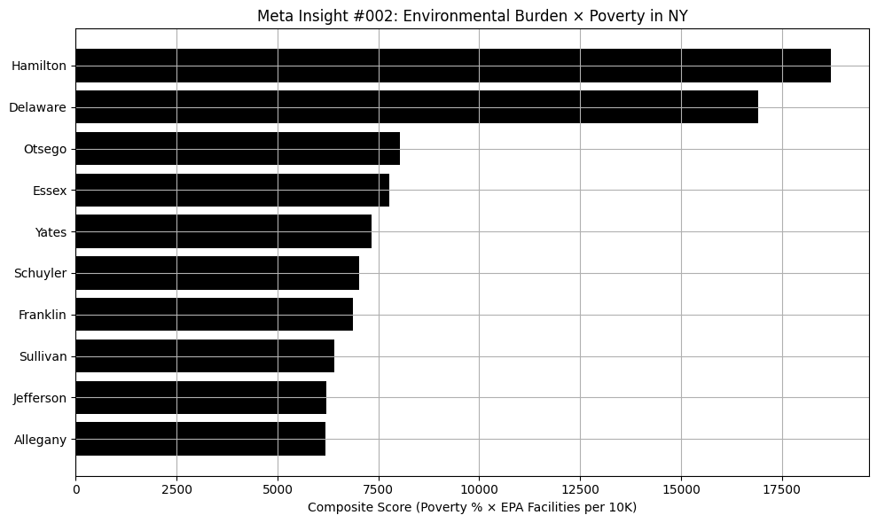

Counties with both high environmental facility density and elevated poverty rates—like Bronx and Kings—show a troubling pattern of disproportionate environmental burden on low-income communities.

Westchester’s child poverty rate (11.2%) is significantly higher than that of working-age adults (8.2%) or seniors (9.1%).

Counties with more EPA-registered facilities also tend to have higher poverty rates, suggesting a correlation between environmental burden and economic inequality.
Social Services, the second most funded NY budget category, has seen steady year-over-year increases since 2020—totaling nearly $21 billion last year.

Transportation and Parks & Recreation saw the biggest cuts in the 2024 NY State Budget, with over $500 million in reduced funding.

According to EPA data, Kings, Queens, and New York counties—home to Brooklyn, Queens, and Manhattan—have the highest number of registered environmental facilities in the state.

In a surprising shift, the NY State Budget shows massive single-year spikes in funding for Higher Education and Transportation—some over $100 million from the previous year.

Over the past five years, Health, Education, and Social Services have consistently received the highest levels of funding in the New York State budget.

Health saw the largest increase in funding in the 2023–24 NY State Budget—up nearly $10 million from the previous year.